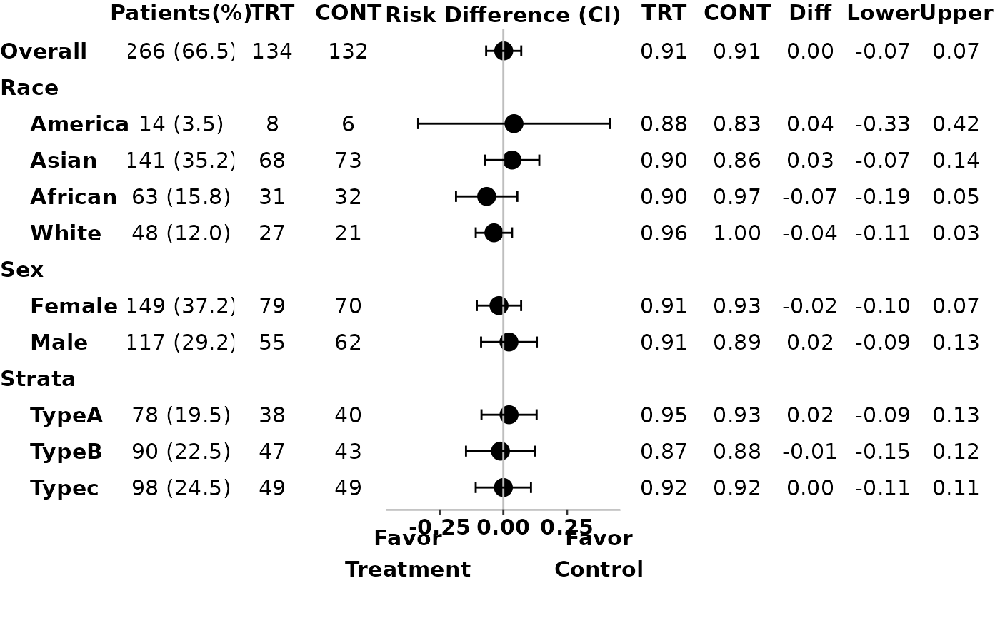
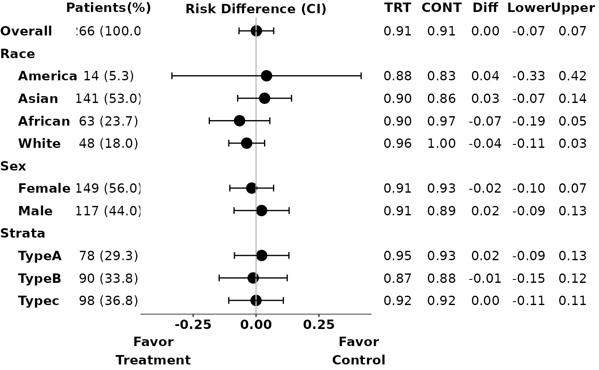

Draw adverse event category plot.
Usage
g_ae_sub(
id,
arm,
arm_sl,
subgroups,
subgroups_sl,
trt = levels(arm)[1],
ref = levels(arm)[2],
indent = 4,
subgroups_levels = NULL,
xmax = 0,
conf_level = 0.95,
diff_ci_method = c("wald", "waldcc", "ac", "score", "scorecc", "mn", "mee", "blj",
"ha", "beal"),
fontsize = 4,
arm_n = FALSE,
draw = TRUE
)Arguments
- id
(
vector)
contains subject identifier. Usually it isADAE$USUBJID.- arm
(
factor)
vector that contains arm information in analysis data. For example,ADAE$ACTARMCD.- arm_sl
(
vector)
contains the subject level treatment variable. For example,ADSL$ACTARM.- subgroups
(
data.frame)
Variables to conduct analysis.- subgroups_sl
(
data.frame)
Subject level variables to conduct analysis. Usually fromADSL.- trt
(
character)
indicates the name of the treatment arm. Default is the second level ofarm.- ref
(
character)
indicates the name of the reference arm. Default is the first level ofarm.- indent
(
numeric)
non-negative integer where 0 means that the subgroup levels should not be indented- subgroups_levels
(
list)
A nested named list of variables to conduct analysis. The names of the nested lists are used to show as the label. The children lists should start with "Total" = variable label, followed by labels for each level of said variable. See example for reference.- xmax
(
numeric)
maximum range for the x-axis. x-axis range will be automatically assigned based on risk output whenxmaxis less than or equal to 0.xmaxis 0 by default- conf_level
(
numeric)
the confidence interval level, default is 0.95.- diff_ci_method
(
character)
the method used to calculate confidence interval. Default is"wald". Possible choices are methods supported inBinomDiffCI.- fontsize
(
numeric)
font size for the plot. It is the size used inggplot2with default unit "mm", if you want "points" you will need to divide the point number byggplot2:::.pt.- arm_n
(
logical)
whether to display the N in each arm.- draw
(
logical)
whether to draw the plot.
Author
Liming Li (Lil128) liming.li@roche.com
Examples
library(grid)
ADAE <- osprey::rADAE
ADSL <- osprey::rADSL
id <- ADAE$USUBJID
arm <- ADAE$ACTARMCD
arm_sl <- as.character(ADSL$ACTARMCD)
subgroups_sl <- ADSL[, c("SEX", "RACE", "STRATA1")]
subgroups <- ADAE[, c("SEX", "RACE", "STRATA1")]
subgroups_levels <- list(
RACE = list(
"Total" = "Race",
"AMERICAN INDIAN OR ALASKA NATIVE" = "American",
"WHITE" = "White",
"ASIAN" = "Asian",
"BLACK OR AFRICAN AMERICAN" = "African"
),
STRATA1 = list(
"Total" = "Strata",
"A" = "TypeA",
"B" = "TypeB",
"C" = "Typec"
),
SEX = list(
"Total" = "Sex",
"M" = "Male",
"F" = "Female"
)
)
# Example 1
p1 <- g_ae_sub(id,
arm,
arm_sl,
subgroups,
subgroups_sl,
trt = "ARM A",
ref = "ARM C",
subgroups_levels = subgroups_levels,
arm_n = FALSE
)
grid::grid.newpage()
# Example 2: display number of patients in each arm
p2 <- g_ae_sub(id,
arm,
arm_sl,
subgroups,
subgroups_sl,
trt = "ARM A",
ref = "ARM C",
subgroups_levels = subgroups_levels,
arm_n = TRUE
)

grid::grid.newpage()
# Example 3: preprocess data to only include treatment and control arm patients
trt <- "ARM A"
ref <- "ARM C"
ADAE <- osprey::rADAE
ADSL <- osprey::rADSL %>% filter(ACTARMCD %in% c(trt, ref))
id <- ADAE$USUBJID
arm <- ADAE$ACTARMCD
arm_sl <- as.character(ADSL$ACTARMCD)
subgroups_sl <- ADSL[, c("SEX", "RACE", "STRATA1")]
subgroups <- ADAE[, c("SEX", "RACE", "STRATA1")]
subgroups_levels <- list(
RACE = list(
"Total" = "Race",
"AMERICAN INDIAN OR ALASKA NATIVE" = "American",
"WHITE" = "White",
"ASIAN" = "Asian",
"BLACK OR AFRICAN AMERICAN" = "African"
),
STRATA1 = list(
"Total" = "Strata",
"A" = "TypeA",
"B" = "TypeB",
"C" = "Typec"
),
SEX = list(
"Total" = "Sex",
"M" = "Male",
"F" = "Female"
)
)
p3 <- g_ae_sub(id,
arm,
arm_sl,
subgroups,
subgroups_sl,
trt,
ref,
subgroups_levels = subgroups_levels,
arm_n = FALSE
)
